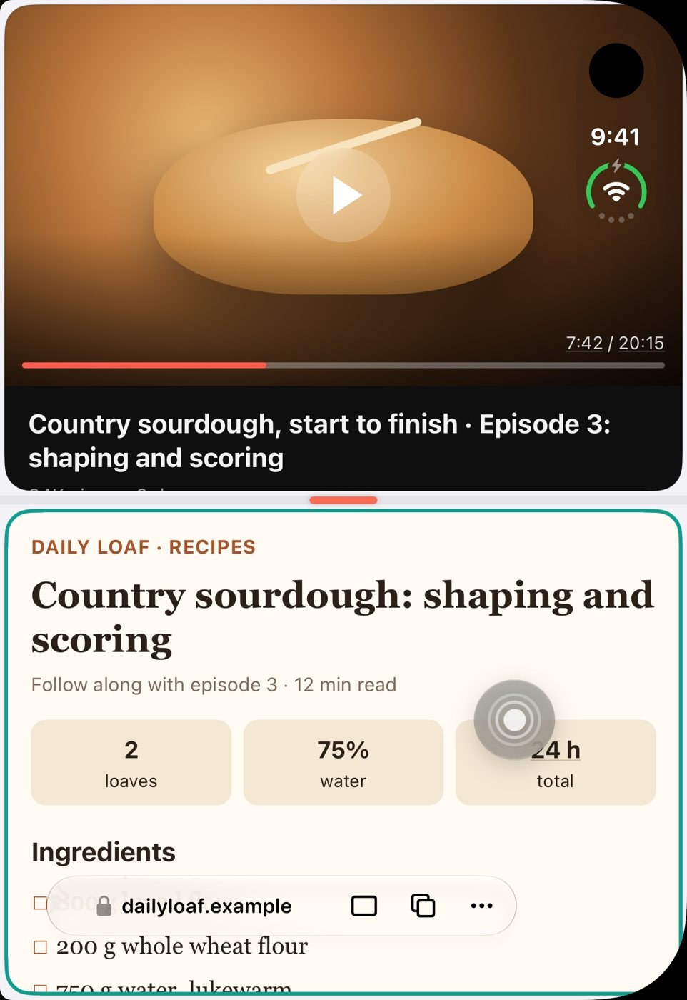
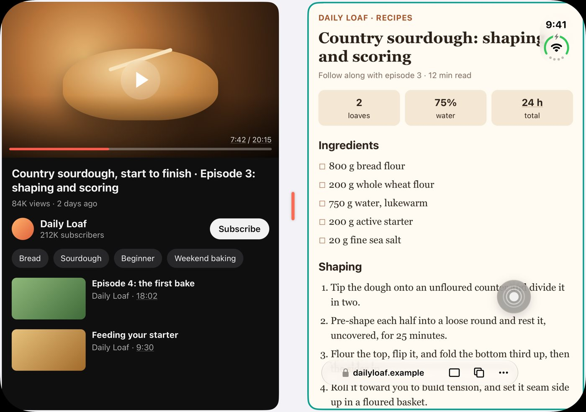
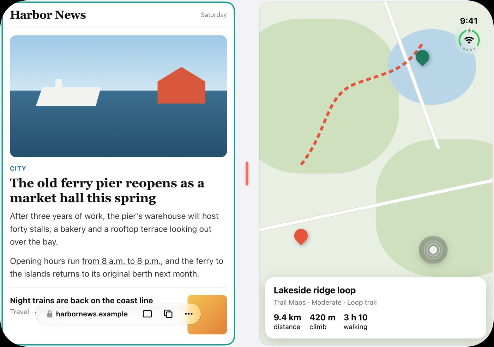
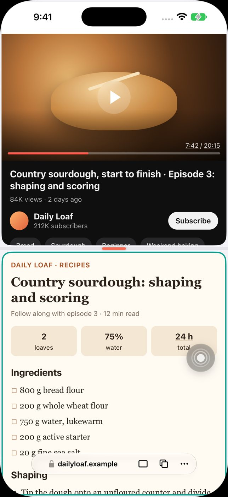
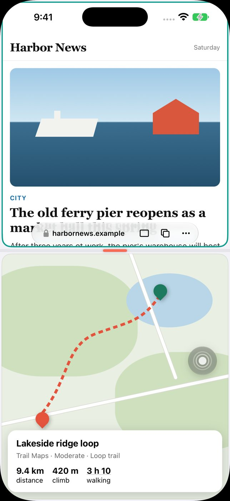
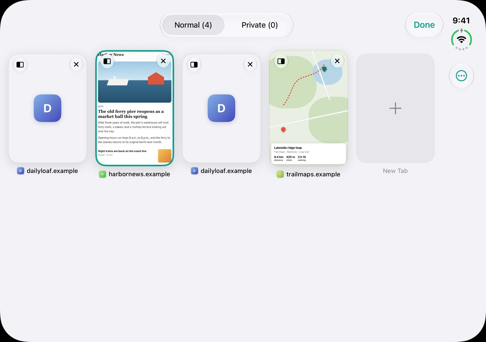

Duo, closed
Two pages on the cover screen, right up to the edge.

Twinfold splits the screen to show two web pages at once. On iPhone Duo they meet at the fold and run edge to edge, under the side band too.

Film
News
Any device
Two pages on the cover screen, right up to the edge.

One page above the fold, one below.

Side by side, each on its half.

Two pages side by side, and Split View with any app.

A video above, the article below. Drag the handle.

Full-screen thumbnails, normal and private.

Swipe for the other devices →
Features
Long-press the handle: half and half, one third, two thirds, or video priority, sized for a 16:9 video. Swap the pages without stopping the video.
Save two pages that go together, with their sizes: a video and your notes, an article and its AI summary. Open them from the Home Screen icon.

One round button floats over the pages. Tap it: your actions open around it. Or press and slide toward one, it runs when you let go. Put it anywhere, or hide it.

Both pages' tabs in one grid, normal and private. And AI beside the page: ChatGPT, Claude, Gemini, Le Chat, Perplexity or Copilot in the other pane, already asked about your page.

Linked panes: tap links on one side, read them on the other. Bilingual reading: a page and its translation scrolling together. Video notes that keep the moment.

Pricing
One purchase, not a subscription.
No. Twinfold is free, and Twinfold Pro is a single purchase, yours for good.
iPhone Duo, every iPhone and iPad with iOS 27 or later.
Yes. iOS lets one of them have sound: each pane has a sound button, so you choose which one you hear.
Apps themselves can't run inside another app on iOS, but their web versions can: YouTube, Maps, Gmail, Notion and more are on the start page. On iPad, Twinfold also works in Split View next to any app.
The assistant's own website opens in the other pane, signed in with your own account. Twinfold never sees your conversations.
Nothing. No account, no server, no analytics: your history and bookmarks stay on your device.